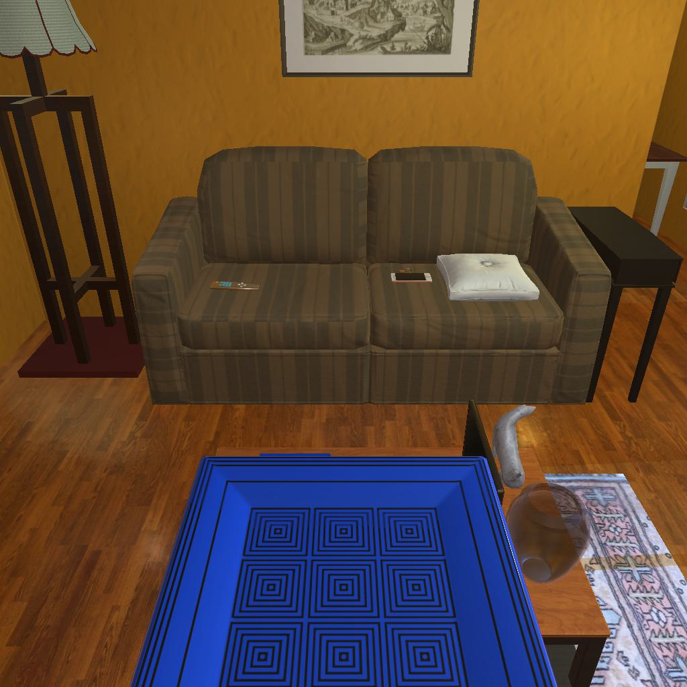

---------------------------------------------------------task: 3---------------------------------------------------------
--------------------------------------------------------------------------------------------------------------------------------------------------------------------
--------------------------------------------------------------------------------------------------------------------------------------------------------------------
Step:--------------------------------------------------------------------------7-------------------------------------------------------------------------------
----------------------------------------
VLM Prompt:
Image1:
Image2:
**Instruction**
1. Analyze the provided images to identify all visible household objects and compare the difference between images (e.h. whether the object is opened or not and taken on hand or not), focusing on those relevant to the task description "examine the plate with the floorlamp."
2. Use the analysis of images and the task hint "The agent must find an object of the desired type, locate and turn on a light source with the desired object in-hand." to answer the question: what is the most reasonable action in the choices for the task description "examine the plate with the floorlamp"?
3. Decide and write the answer using the template: The answer is: (i): , where i is the real number. If there is no desired object in images, search every place based on **Initial Observation** to find the object. And if no one is exactly correct, choose a similar answer.
**Initial Observation**
You are in the middle of a room. Looking quickly around you, you can see armchair (1), garbagecan (1), tvstand (1), shelf (1-5), sofa (1), coffeetable (1), sidetable (1-2), drawer (1)
**Answer Choices**
(1): go to armchair 1
(2): go to garbagecan 1
(3): go to tvstand 1
(4): go to shelf 2
(5): go to sofa 1
(6): go to sidetable 1
(7): go to sidetable 2
(8): go to drawer 1
(9): go to shelf 3
(10): go to shelf 4
(11): go to shelf 5
(12): put plate 2 in/on coffeetable 1
(13): use floorlamp 1
(14): examine plate 2
(15): examine coffeetable 1
**Answer**
Let's think step by step by following the instructions.
----------------------------------------
----------------------------------------
Original Response:
Firstly, we need to identify all visible household objects in Image1 and Image2. In Image1, we can see a TV on a tvstand, a blue rug, and a green garbagecan. In Image2, there is a sofa with some items on it, a sidetable, a floorlamp, and a picture on the wall.
Comparing the differences between the images, there is no visible plate or floorlamp in Image1, but in Image2, we can see the floorlamp next to the sofa. There are no objects on the floorlamp in Image2, which indicates we have not yet examined the plate with the floorlamp.
According to the task description, "examine the plate with the floorlamp," and the task hint, the agent must find a plate, have it in hand, and turn on the light source. Since there is no visible plate in the images, we must search the room to find it.
Based on the **Initial Observation**, the potential locations to search for the plate are the armchair, tvstand, shelves, sofa, sidetable, and drawer. We can rule out the garbagecan as it is unlikely for a plate to be there.
Considering the most reasonable action to find the plate and then examine it with the floorlamp, we should start by searching the areas closest to the floorlamp for efficiency.
The answer is: (7): go to sidetable 2
----------------------------------------
----------------------------------------
>>> Refine Original VLM Response and Get Pure Action: go to sidetable 2
----------------------------------------
-----------------------------------------------------------------
Running time: 40.10060095787048 seconds
Total Money: 0.8385600000000001
-----------------------------------------------------------------
-----------------------------------------------------------------
Text Observation:You arrive at loc 8. On the sidetable 2, you see a plate 3, and a vase 2.
-----------------------------------------------------------------
UNSUCCEED